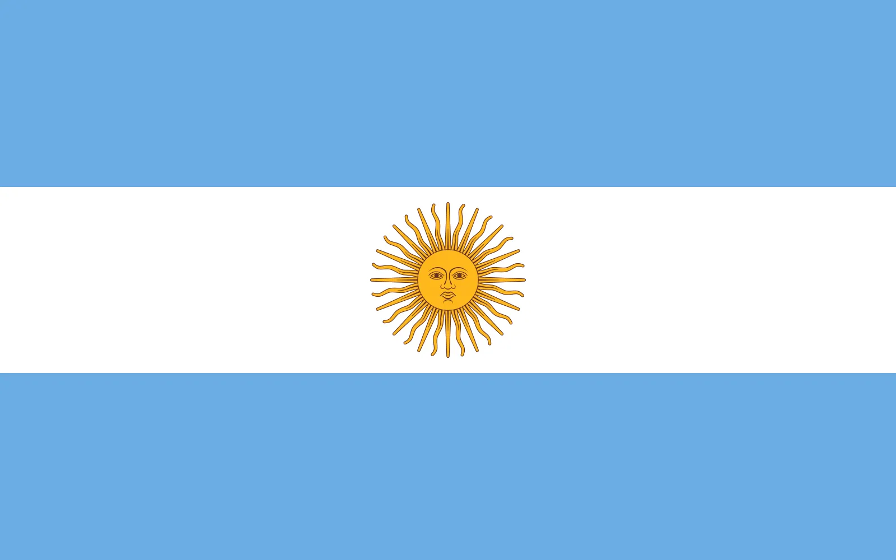

About Me
My name is Franco, and I'm currently 23 years old. I was born in Buenos Aires Argentina, but I am currently living in Córdoba province. I'm studying International Business at the National University of Quilmes, and Software Development at BYU-I. I love the outdoors and spending time with my family and friends
Argentina

Argentina is a vibrant South American country known for its diverse landscapes, from the Andes mountains to the Pampas grasslands. It's famous for tango, soccer, delicious steaks, and its rich cultural heritage. The country has a population of approximately 45 million people, with Buenos Aires as its capital city.